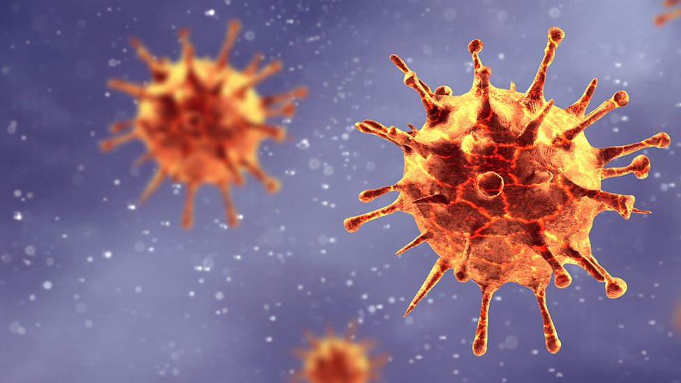
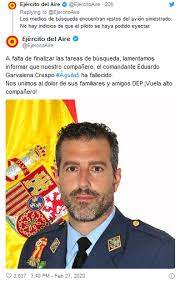

La búsqueda del paciente cero del coronavirus se complica
En Corea del Sur también han identificado a la primera persona en sufrir Covid-19, y los expertos en epidemiología destacan que este conocimiento es fundamental para controlar cuál es el origen, con quién ha tenido contacto y tomar medidas de protección más adecuadas.
"Averiguar quién era el paciente cero no nos daría todas las respuestas, pero ayudaría a trazar el camino que ha tomado el virus y cómo se está desplazando", dice Sarah Borwei, experta en enfermedades infecciosas al South China Morning Post. "Es difícil dibujar ese mapa sin saber dónde comienza".
Las autoridades chinas siguen buscando al paciente cero del brote originario que tuvo lugar en diciembre de 2020 en Wuhan. En su momento, se ubicó el foco de la enfermedad en el mercado de animales vivos de la ciudad, pero un estudio reciente sugiere que podría haber sido importado de otra parte. La rápida propagación del virus y la aparición de nuevos brotes hace que la búsqueda del primer paciente cero se vuelva cada vez más complicada, aseguran los expertos al South China Morning Post.

Cuatro muertos en cinco meses y aviones de 42 años: la Patrulla Águila, en 'shock'
Las fuentes militares consultadas lo tienen claro: "Por pericia no es, el problema es que son aviones que están cerca de su obsolescencia y en los que se vuela a diario". Efectivamente, mientras en algunas unidades militares se presume de utilizar la tecnología más puntera del mundo, en la Patrulla Águila se vuela con aparatos que entraron en funcionamiento en 1978. Es decir, tienen 42 años de funcionamiento. En el Ministerio de Defensa admiten que los modelos C-101 de la Patrulla Águila se encuentran en la fase final de su vida útil. Pero Margarita Robles insistía el pasado verano, estando en funciones, que no son aviones obsoletos: "Ningún comandante con la experiencia de Francisco Marín se habría subido al avión si no hubiera estado en condiciones; el avión podía operar perfectamente, todo funcionaba dentro de la normalidad", dijo. La decisión que tomó el departamento castrense ha sido la de renovar estos aviones y adquirir 24 Pilatus de entrenamiento. Está previsto que su entrada en funcionamiento en la AGA se produzca a final de este año, pero no se empezarán a usar como aviones de entrenamiento hasta septiembre del próximo año. Es decir, aún quedan meses para que este programa esté operativo.
UK amenaza con romper las negociaciones en junio si la UE no se pliega a sus exigencias
Downing Street no acepta la alineación con la normativa comunitaria ni tampoco el papel del Tribunal de Justicia de la UE (TJUE) como árbitro. Y hay más. Para aquellos que decían que diez meses no son suficientes para cerrar un pacto se lanza el siguiente órdago: no sólo no habrá extensiones de plazos, sino que si para junio no hay avances, Londres se levantará de la mesa sin convenio. En ese caso, la relación entre el Reino Unido y el bloque se regularía tan sólo bajo los parámetros de la Organización Mundial del Comercio. En otras palabras, el Brexit duro que tanto se había intentado evitar. El Reino Unido salió de facto del bloque el pasado mes de enero, aunque a efectos prácticos seguirá siendo miembro del mercado único y la unión aduanera hasta finales de 2020. Durante este periodo de transición, se deben negociar las futuras relaciones que existirán a partir de ahora entre ambas partes. El acuerdo comercial se lleva todo el protagonismo, pero también hay otras cuestiones claves, como la seguridad.
Trump, absuelto en el juicio político
«El presidente Trump fue acusado con el apoyo de la mayoría del pueblo estadounidense, el primero en la historia de nuestra nación. Y ahora es el primer presidente en la historia en enfrentar un voto bipartidista para condenarlo en el Senado. Un 75% de los estadounidenses y muchos miembros del Senado republicano creen que el comportamiento del presidente es incorrecto. Pero el Senado prefirió ignorar los hechos, la voluntad del pueblo estadounidense y su deber a la Constitución», dijo Pelosi. Pelosi agregó: «El presidente se jactará de que ha sido absuelto. No puede haber absolución sin un juicio, y no hay juicio sin testigos, documentos y pruebas. Al suprimir las pruebas y rechazar los elementos más básicos de un proceso judicial justo, los senadores republicanos se hicieron cómplices voluntarios del encubrimiento del presidente».